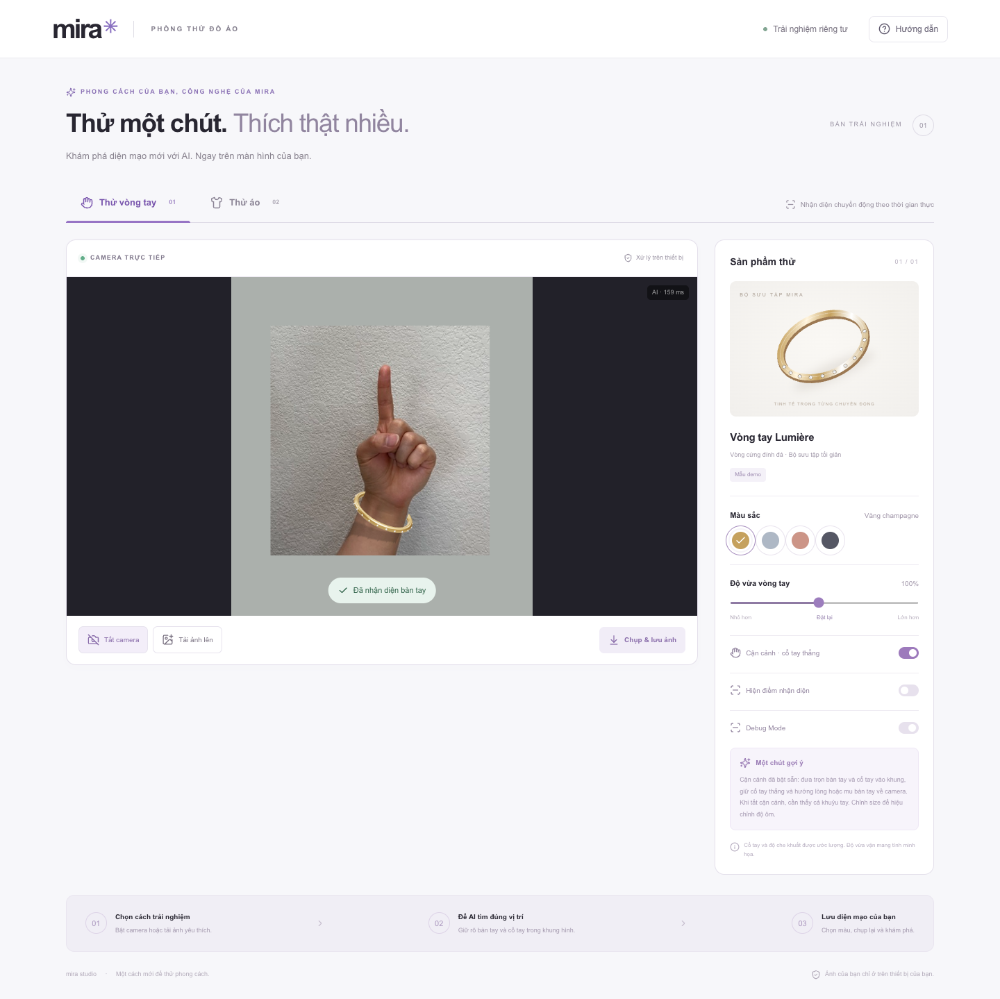

Source baseline trước sửa
Lỗ vòng chiếu: 116.07px. Ảnh chuẩn này không tái hiện lỗi vòng quá nhỏ nghiêm trọng.

Live sau sửa
Biên: 103px · lỗ vòng: 114.38px. Có native-edge/segmentation và giữ calibration có kiểm soát.

MediaPipe VIDEO thực trên ảnh/canvas phát lại; không phải webcam phần cứng hoặc xoay cổ tay 3D thực. Giữ nguyên model Lumière/material/ánh sáng.
Lỗ vòng chiếu: 116.07px. Ảnh chuẩn này không tái hiện lỗi vòng quá nhỏ nghiêm trọng.
Biên: 103px · lỗ vòng: 114.38px. Có native-edge/segmentation và giữ calibration có kiểm soát.

Upload: 15 ảnh render/đo A/B giữ nguyên byte so với baseline. Xem source-integrity.json, upload-regression.json và docs/live-camera.md.